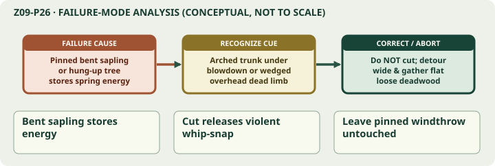

Z09-P26 · Tools and construction · New manuscript
Recognize spring poles and hung-up deadfall before making a cut
Avoid lethal whipping recoil from bent saplings and sudden collapses from wedged overhead trees.
When it applies · Storm-damaged woods, windthrow corridors and downed-wood gathering sites.
Equipment · Visual hazard assessment (no camp tool makes hazardous windthrow safe without specialist training).

Actions
- Scan any bent, pinned or arched sapling or branch—wood bent under a fallen trunk stores massive spring energy that whips sideways or upward instantly with bone-breaking force if cut.[K05, K10]
- Scan overhead for hung-up dead trees (widowmakers) leaning into neighboring branches; cutting or shifting the base log can bring the entire overhead mass crashing down unpredictably.[K05, K10, E13]
- Walk cleanly around storm tangles and gather small loose, unpinned deadwood lying flat on stable ground instead.[K10, E13]
Failure recognition · Sawing halfway through a bent sapling pinned under a fallen oak, releasing a violent whip-strike to the head or chest.[K05, K10]
Verify · Confirm every piece of deadwood you cut lies flat, unbent, unpinned and completely clear of leaning overhead timber.[K05, K10, E13, ED]
Stop or change course · Never cut spring poles, under-tension windthrow trunks or leaning hung-up trees with camp tools—detour clear and report trail hazards to land managers.[K05, K10, E13]
Evidence and editorial notes
- E13 · USDA Forest Service · Hazard Tree Safety (agency PDF)
- Section: What You Can Do to Reduce Risk · Conditions: Forest campsites and stops
Support: Look for dead trees and falling material. Stay away from hazardous trees and move away when winds make the site unsafe.
Limitations: Internal decay and root rot can cause live-looking trees to fail in saturated soils or high wind. · Conflicting evidence: Does not specify a universal exclusion radius; tree height and slope govern fall reach.
Editorial note: Prevents false precision on fall-zone distance while requiring overhead screening. · Specialist reviewer: Land management and arboriculture safety
Primary source · checked 2026-11-24 - K05 · USDA Forest Service · Handtools for Trail Work PDF (agency PDF)
- Section: Sawing, Splitting and Lever Principles · Conditions: Cutting downed wood, clearing deadfall and moving heavy logs safely
Support: Assess bind and tension in fallen logs before cutting so saws do not pinch or limbs spring back; use solid levers and fulcrums safely without standing in the recoil path of strained timber.
Limitations: Complex storm-damaged or hung-up trees require professional sawyers and are outside camp tool scope. · Conflicting evidence: None; informs spring-pole, saw-bind and lever mechanical-advantage cards.
Editorial note: Prevents kickback, saw pinching and recoil injuries in Z09. · Specialist reviewer: Forestry tool safety and mechanical safety
Primary source · checked 2026-11-24 - K10 · USDA Forest Service · Handtools for Trail Work PDF (agency PDF)
- Section: Felling and Overhead Timber Exclusions · Conditions: Camp wood preparation and trail clearing
Support: Do not fell standing trees or work beneath hung-up limbs without specialized training and gear; restrict routine camp woodworking to small sound downed deadwood where lawful.
Limitations: Standing dead trees (snags) fail unpredictably under vibration or wedging. · Conflicting evidence: Aligns with E13 and C17.
Editorial note: Reinforces strict downed-wood-only woodworking boundary. · Specialist reviewer: Forestry safety and land management
Primary source · checked 2026-11-24
Source lineage · USFS trail handtools; new manuscript · Classification · New manuscript.